Open source UAS processing on cloud infrastructure
GIS595-004/603; MEA592-006/601:
UAS Mapping for 3D Modeling
Anna Petrasova, Vaclav Petras, Helena Mitasova
Outline
Parallel computing concepts
Parallel computing infrastructure
Software licences and open source software
Overview of open source tools for UAS processing
OpenDroneMap
Parallel processing
Structure from Motion pipeline is typically more demanding
than what we are used to usual with geospatial analysis
solution is parallel processing (and more efficient algorithms in long term)
types of parallel processing:
CPU — tens of parallel processes
GPU — hundreds and thousands of parallel processes
cluster with nodes — each node has tens of CPUs/GPUs
CPUs in geospatial context
Just because your computer has many CPUs, that doesn't mean
a computation uses them
Implementing parallel computing with CPUs can be done on the level of algorithm or user level
CPUs in geospatial context: approaches
Embarassingly parallel problems — independent computations (e.g., solar radiation for more days)Tiling approach — divide spatial domain into tiles possibly with overlaps (e.g., interpolation)Complex approaches — depend on algorithms, often use tiling with communication between tiles (e.g., hydrology)
VIDEO
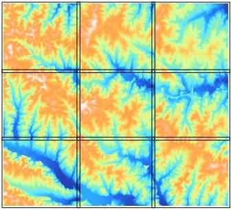
CPUs in geospatial context: (dis)advantages
Benefits:
Many problems fall into first two categories
It's fairly easy for users to parallelize their computations
using Python, or background processing
Problems:
Overhead can cause a program to run slower than on one CPU (running on n CPUs does not mean n -times speed-up)
We might not have enough memory for all processes
GPU computing
suitable for large number of very simple computational tasks with minimum memory requirement
hardware specific (e.g., CUDA platform is for Nvidia only)
complex programming APIs
SfM parallel computing
different parts of the pipeline are suitable for different parallelization types
e.g., PhotoScan can use GPU for image matching and depth maps creation
Parallel computing infrastructure (1)
laptop/desktop (low power, 8 CPUs) — for individuals
server (medium power, tens of CPUs)
typically remote access, but physical machine is accessible
hardware owned by organizations, companies
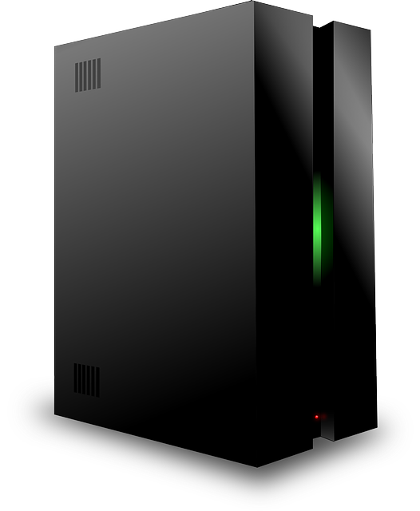
Parallel computing infrastructure (2)
cloud (medium power, tens of CPUs)
connected computers, actual hardware/OS hidden through virtualization
easy to setup from user point of view
computing is often not the primary application
e.g., NCSU VCL , Amazon Web Services
Parallel computing infrastructure (3)
HPC, supercomputers (high power, thousands of CPUs)
connected nodes, unix-based OS (e.g., Linux)
not all programs can take advantage of it
e.g., NCSU HPC: henry2
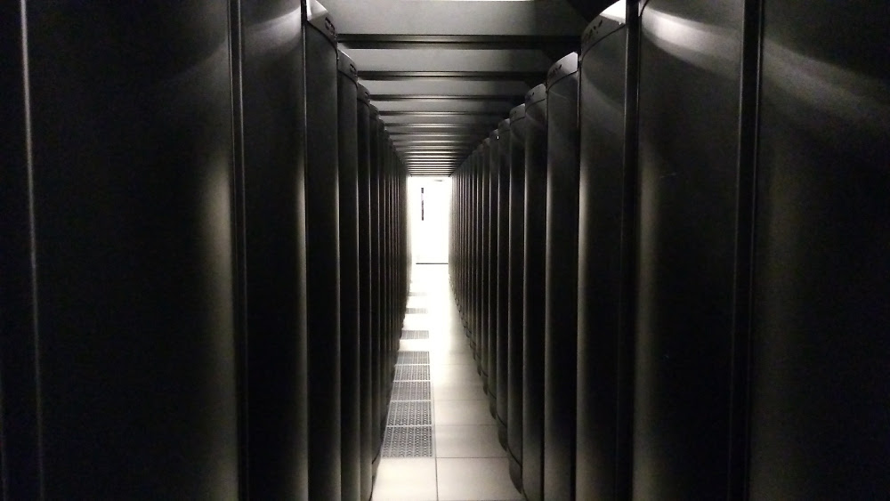
Supercomputer Blue Waters, NCSA, Illinois
PhotoScan Requirements
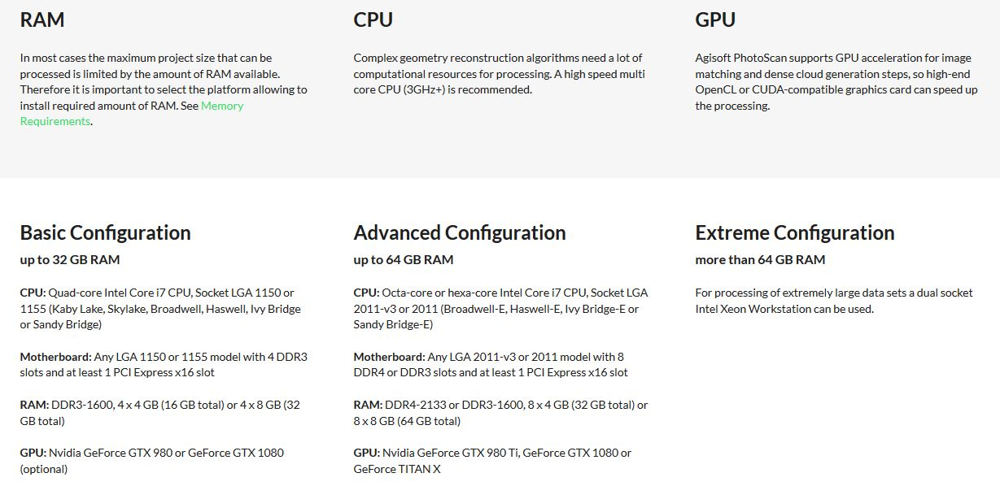
HEre are Agisoft suggestions to run the software, not what will perform best
Ram is the memory, CPU is the processor and GPU is the graphics card.
PhotoScan CPU
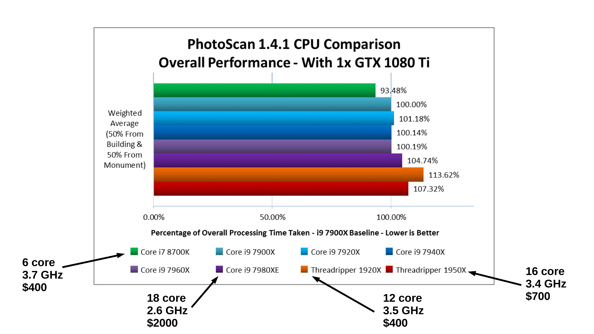
https://www.pugetsystems.com/recommended/Recommended-Systems-for-Agisoft-PhotoScan-145/Hardware-Recommendations
Some steps use clock speed and some use cores
Steps such as Build Dense Cloud benefit from many few cores
Building the mesh and texture do better with high clock speeds
for overall processing, higher Clock speeds are key. The AMD threadripper processors are cheaper but slower.
PhotoScan GPU
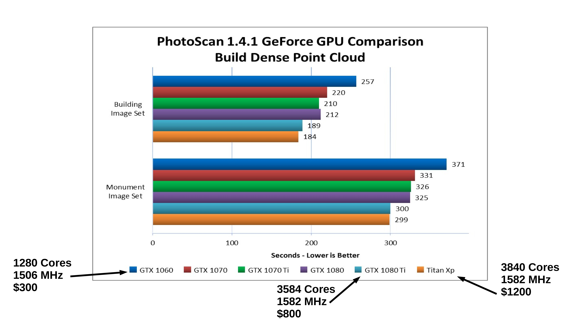
https://www.pugetsystems.com/recommended/Recommended-Systems-for-Agisoft-PhotoScan-145/Hardware-Recommendations
PhotoScan Multiple GPUs
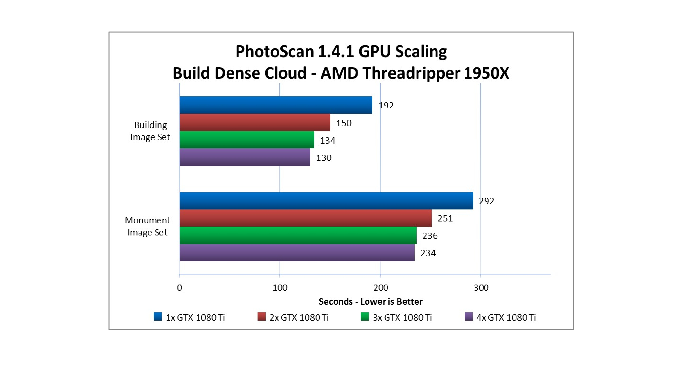
https://www.pugetsystems.com/recommended/Recommended-Systems-for-Agisoft-PhotoScan-145/Hardware-Recommendations
PhotoScan Hard Drive Write Speeds
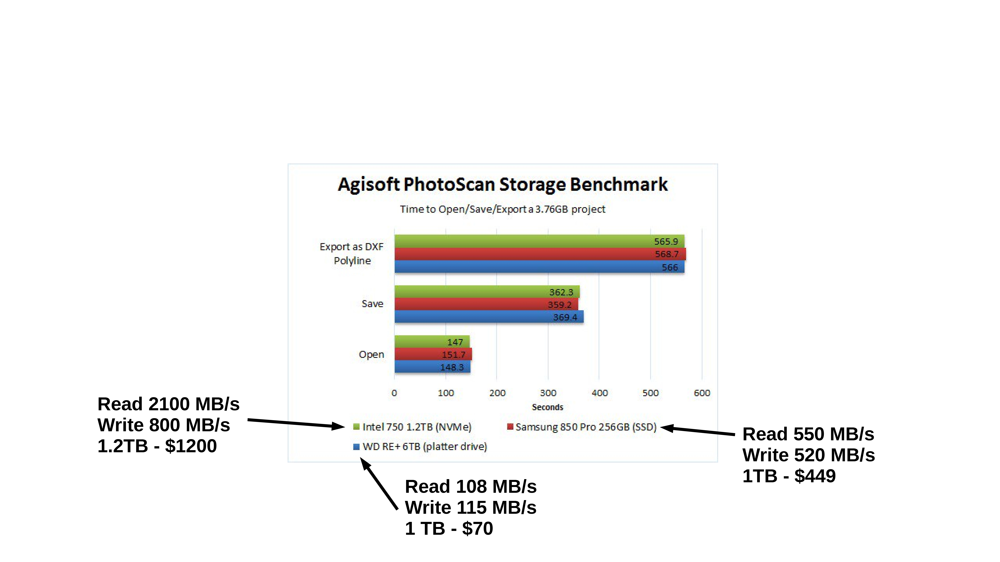
https://www.pugetsystems.com/recommended/Recommended-Systems-for-Agisoft-PhotoScan-145/Hardware-Recommendations
PhotoScan Memory
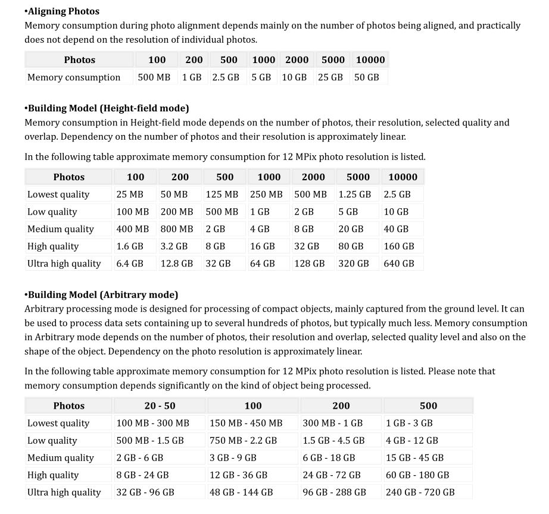
adjust the RAM to the resolution of photos and number of photos
once the ram has been exceeded it will start using the disk and it will fail.
the max memory is also governed by the CPU
Local Workstation
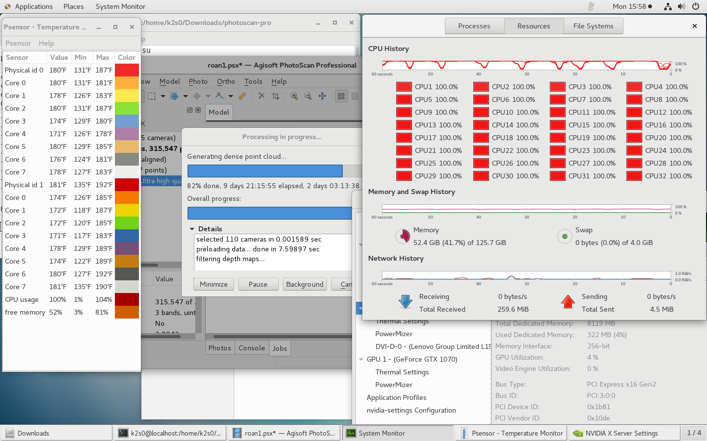
here is a screenshot from my Photoscan computer
too a while to sort out the hardware
32 cores, 126 GB ram. process took almost 10 days to run at 100%
Alternatives- Henry 2
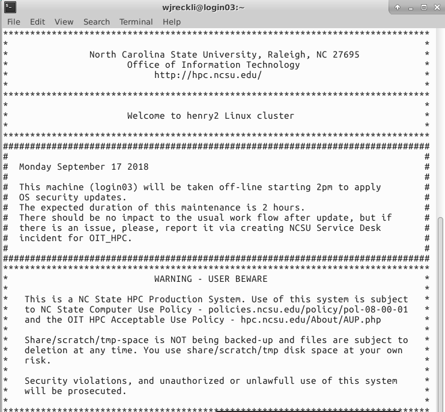
Alternatives- AWS
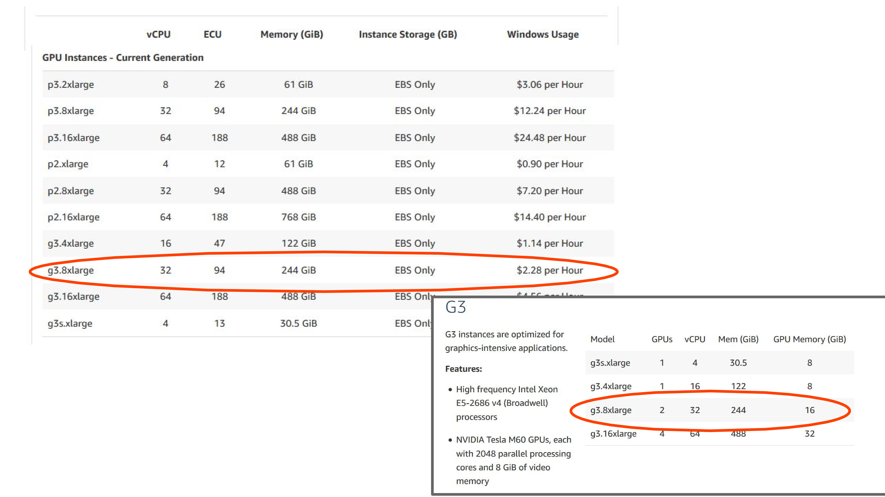
this set up is closest to the machine I am running
10 days of processing would come out to around $500
these are the linux machine costs
this doesn't include the data transfer and re-work
Software licensing and cloud
When using any software, you need to deal with licenses. Proprietary software:
often has educational vs. commercial licenses
typically needs licences for each computer/user —
may require special licenses for cloud (e.g., Agisoft floating licences), or per computer cores (e.g., Oracle)
price may be included in the cost of cloud virtual instances (e.g., Windows vs Linux)
Software licensing and cloud
Free and open source software:
is free to run, study, modify and distribute
users can use it for any purpose and don't have to worry about the license
most web and clouds are based on open source technologies
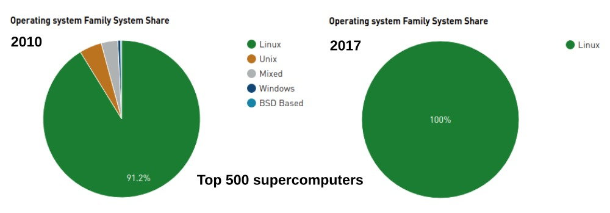
MicMac
Developed by French National Geographic Institute (IGN)
Set of command-line tools for the different parts of imagery processing
Steep learning curve, see PDF documentation
Reconstruction results similar or better than other SfM software, see for example this
paper or a video
Not very active project, mostly one developer
Recent overview paper about MicMac
Full pipeline, some parts are using other projects:
ODM vision: Open Data Ecosystem
The aim is for the toolchain to also be able to optionally push to a variety of online data repositories:
ODM advantages
open source project, can be used commercially,
active community: free real-time support on Gitter
easy for batch processing,
active development, new features coming, see
roadmap
ODM drawbacks
GCPs need to be used during reconstruction process to increase precision and avoid 'doming effect'
missing GUI for GCPs identification
missing GPU acceleration
ODM results
Improvements in mosaicing:
ODM results
Difference between lidar and ODM reveals doming effect:
Assignment
We will run ODM on Ubuntu VCL:
Mid Pines sample dataset
using Docker — through command line
using ODM web interface WebODM
What is Docker?
tool for easy deploying and running applications by using containers
containers allow to package an application with dependencies
no installation, keeps your system clean
ensures application runs no matter what customized settings your machine has
similar to Virtual Machine, but much more efficient, takes up less space
based on Linux, but there is also Docker for Windows
WebODM: ODM with web browser interface
allows viewing results as a 2D webmap, 3D point cloud
learn more at WebODM
we will deploy WebODM using Docker
What we have learned
what is parallel computing about
what types of computing infrastructure are available
software licensing and cloud
current state of open source tools for SfM